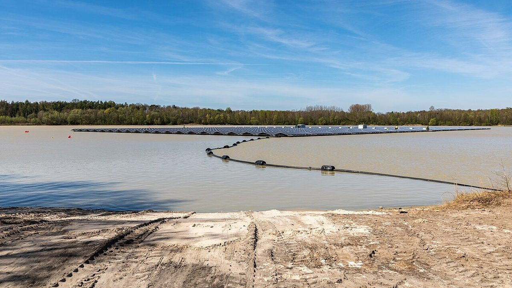

인천 1호 햇빛소득마을에 강화 길정리…저수지 위 2MW 수상태양광

주민과 강화남부농협이 함께 협동조합에 출자, 발전수익은 지역화폐 배당과 공동 복지기금으로
인천 강화군 양도면 길정리마을이 행정안전부 햇빛소득마을 공모에 인천에서 처음으로 선정됐다. 길정햇빛소득협동조합이 한국농어촌공사 소유 길정저수지 약 2만㎡를 빌려 2MW 규모 수상태양광을 짓는 사업으로, 이번 공모에서 1MW를 넘는 사업 가운데 가장 크다. 주민과 지역 금융기관인 강화남부농협이 함께 조합에 출자하고, 발전수익은 지역화폐 등을 통한 주민 배당과 마을 공동 복지기금으로 돌릴 계획이다. 인천시는 지난 5월부터 강화군·에너지공단·농어촌공사·한전 등이 참여한 민관합동 현장지원단을 꾸려 주민설명회와 조합 설립을 도왔고, 앞으로 인허가·부지 사용·금융 약정을 지원하는 한편 10월 30일 마감되는 3차 공모에 나설 마을도 찾기로 했다.
시민에너지 관점
주민과 지역 농협이 함께 출자하는 구조는 외부 자본에 기대지 않고 지역 안에서 돈이 돌게 한다는 점에서 눈여겨볼 만하다. 다만 2MW 규모는 사업비와 대출 부담도 큰 만큼, 주민 출자 비율과 배당 기준, 공동기금 사용 원칙을 처음부터 공개해 두는 것이 신뢰를 지키는 데 도움이 될 것이다. 수상태양광은 경관을 둘러싼 이견이 생기기 쉬우므로, 마을 안의 다른 목소리를 듣는 절차도 함께 챙겨야 한다.
길정햇빛소득협동조합은 주민 출자 비율과 배당 기준, 공동 복지기금 사용 원칙을 정관과 주민 설명 자료에 담아 처음부터 공개할 수 있다. 인천시와 민관합동 현장지원단은 인허가·부지 사용·금융 약정 지원을 이어 가면서, 경관을 둘러싼 마을 안의 다른 의견을 듣는 자리도 함께 마련해야 한다. 주민과 강화남부농협이 함께 출자하는 방식은 3차 공모에 나설 다른 인천 마을에도 소개할 수 있다. 인천시는 길정리의 준비 과정을 기록으로 남겨 도시권 마을이 참고할 안내서로 만들 수 있다.
출처: 솔라투데이 2026-10-22 정한교 원문 보기
仁川初の「日差し所得村」に江華・吉亭里…貯水池に2MWの水上太陽光
住民と江華南部農協が共同で協同組合に出資、発電収益は地域通貨での配当と共同福祉基金に
仁川市江華郡良道面の吉亭里（キルジョンリ）村が、行政安全部の「日差し所得村（햇빛소득마을）」公募に仁川で初めて選ばれた。吉亭日差し所得協同組合が韓国農漁村公社所有の吉亭貯水池約2万㎡を借りて2MW規模の水上太陽光を建設する事業で、今回の公募で1MWを超える事業の中では最大規模だ。住民と地域の金融機関である江華南部農協が共同で組合に出資し、発電収益は地域通貨などによる住民配当と村の共同福祉基金に充てる計画だ。仁川市は5月から江華郡・エネルギー公団・農漁村公社・韓国電力などが参加する官民合同の現地支援団を設けて住民説明会や組合設立を支援しており、今後は許認可・敷地使用・融資契約を後押しするとともに、10月30日締め切りの第3次公募に応募する村も探すとしている。
市民エネルギーの視点
住民と地域の農協が共同で出資する構造は、外部資本に頼らず地域の中でお金が回るようにする点で注目に値する。ただし2MW規模は事業費や借入の負担も大きいだけに、住民の出資比率や配当の基準、共同基金の使い道の原則を最初から公開しておくことが信頼を守る助けになるだろう。水上太陽光は景観をめぐる意見の違いが生じやすいため、村の中の異なる声を聞く手続きもあわせて整える必要がある。
キルジョン太陽光所得協同組合は、住民の出資比率や配当の基準、共同福祉基金の使い道の原則を、定款と住民向けの説明資料に盛り込み、最初から公開できる。仁川市と官民合同の現場支援団は、許認可・用地使用・金融約定の支援を続けながら、景観をめぐる村の中の異なる意見を聞く場もあわせて設けるべきだ。住民と江華南部農協がともに出資する方式は、3次公募に挑む仁川の他の村にも紹介できる。仁川市はキルジョン里の準備の過程を記録に残し、都市圏の村が参考にできる手引きにまとめることができる。
出典: Solar Today 2026-10-22 Jeong Han-gyo 原文を読む
仁川首个"阳光收入村"落户江华吉亭里…水库上建2MW水面光伏
居民与江华南部农协共同出资合作社，发电收益用于地方货币分红和公共福利基金
仁川江华郡良道面吉亭里村成为仁川首个入选行政安全部"阳光收入村"公开征集的村庄。该项目由吉亭阳光收入合作社租用韩国农渔村公社所有的吉亭水库约2万平方米，建设2MW规模的水面光伏，是本次征集中超过1MW的项目里规模最大的。居民与地方金融机构江华南部农协共同向合作社出资，发电收益计划通过地方货币等形式向居民分红，并投入村庄公共福利基金。仁川市自5月起组建由江华郡、能源公团、农渔村公社、韩国电力公社等参与的官民联合现场支援团，协助举办居民说明会和设立合作社，今后将支持许可、用地使用和融资协议等后续手续，同时为10月30日截止的第三轮征集继续发掘申请村庄。
市民能源视角
居民与地方农协共同出资的结构，不依赖外部资本，让资金在地方内部循环，这一点值得关注。不过2MW规模的项目费用和贷款负担也较大，从一开始就公开居民出资比例、分红标准和公共基金使用原则，将有助于维护信任。水面光伏容易在景观问题上产生分歧，因此也要同时做好倾听村内不同声音的程序。
吉亭阳光收入合作社可以把居民出资比例、分红标准和公共福利基金使用原则写进章程和面向居民的说明材料，从一开始就公开。仁川市和官民联合现场支援团在继续支持许可、用地使用和金融协议的同时，也应安排倾听村内围绕景观的不同意见。居民与江华南部农协共同出资的方式，可以介绍给准备参加第三轮招募的其他仁川村庄。仁川市可以把吉亭里的准备过程记录下来，编成城市地区村庄可参考的指南。
来源: Solar Today 2026-10-22 Jeong Han-gyo 查看原文
Ganghwa's Giljeong-ri becomes Incheon's first sunlight income village with 2MW floating solar on a reservoir
Residents and Ganghwa Nambu Nonghyup jointly invest in the cooperative; revenue to go to local-currency dividends and a shared welfare fund
Giljeong-ri village in Yangdo-myeon, Ganghwa County, has become the first in Incheon to be selected for the Ministry of the Interior and Safety's sunlight income village program. The Giljeong Sunlight Income Cooperative will lease about 20,000㎡ of Giljeong reservoir, owned by the Korea Rural Community Corporation, to build a 2MW floating solar plant, the largest among projects over 1MW in this round. Residents and the local financial institution Ganghwa Nambu Nonghyup will jointly invest in the cooperative, and power revenue is planned to go to resident dividends paid in local currency and to a village welfare fund. Since May, Incheon has run a public-private field support team including Ganghwa County, the Korea Energy Agency, the Korea Rural Community Corporation and KEPCO to help with resident briefings and setting up the cooperative; it will now support permits, site use and financing agreements, while looking for more villages to apply in the third round, which closes on October 30.
Citizen Energy View
A structure in which residents and the local agricultural cooperative invest together deserves attention because it keeps money circulating within the community rather than relying on outside capital. But since a 2MW project carries sizable costs and loan burdens, disclosing the residents' equity share, dividend rules and principles for using the shared fund from the start would help maintain trust. Floating solar easily draws differing views over the landscape, so a process for hearing other voices in the village should come with it.
The Giljeong sunlight income cooperative could set out the residents' equity share, dividend rules and principles for the common welfare fund in its bylaws and briefing materials, and publish them from the start. As Incheon City and the public-private field support team continue helping with permits, site use and financing agreements, they should also arrange forums to hear differing views within the village, including on the landscape. The model of residents and the Ganghwa Nambu agricultural cooperative investing together could be introduced to other Incheon villages preparing for the third round. Incheon could document how Giljeong-ri prepared and turn it into a guide for villages in urban areas.
Source: Solar Today 2026-10-22 Jeong Han-gyo Read the original